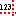

Parser directives
Available directives
In text file you can embed other informations than just numbers: MattPlot parser supports a syntax to specify parsing options and additional informations on stored data. User can specify informations like:- track organization, names, units of measure
- coding information like decimal separator char or column delimiters
- parser behaviour: error tolerancy, end of parsing
- postprocessing on retrieved data (resampling,reordering,rescaling,splitting)
C
preprocessor: they consist of a specific keyword
prefixed by the special character #;
they can be eventually followed by a string argument,
which consist of the
trimmed
string between directive keyword and end of line.
Directives must not follow a particular sequence;
see below for some examples.
Supported directives are:
| Keyword | Argument | Description | Remarks |
#header |
string | columns informations | ordinate-abscissa relations, names, scales, units, delimiters |
#resample |
index sequence definition | resample and reorder | modify samples sequence after parsing; indexes are referred respect shorter column and rescaled for the others; the scope is in the current data session |
#split |
sequence of numbers | split columns | slice proportionally data columns; the scope is in the current data session |
#title |
string | title of plot frame | shown in plot area; persists between data sessions |
#xlabel |
string | abscissa axis label in plot frame | shown in plot area in place of current track abscissa label, persists between data sessions |
#ylabel |
string | ordinate axis label in plot frame | shown in plot area in place of current track ordinate label, persists between data sessions |
#xmarker |
number | a vertical line in plot frame at a given abscissa | persists between data sessions.
See  AddMarker |
#ymarker |
number | a horizontal line in plot frame at a given ordinate | persists between data sessions.
See AddMarker |
#text |
(number;number) string | a text label in plot frame | shown in plot area at given coordinate,
persists between data sessions.
See ![[AddText]](./files/images/actions/AddText.gif) AddText.
Prefix text string with +
to show point coordinates.
|
#tolerant |
bool | accept strange numbers | like -. or E+ etc...;
persists between data sessions |
#decimalseparator |
char | declaration of decimal separator char | (ex. 1.2 or 1,2) override the global one defined in
DecimalSeparator option;
persists between data sessions.
This directive neutralizes the curse of infamous
locale settings |
#thousandseparator |
char | skipped character in number literals integer part | used to ignore the thousand grouping character when converting number literals; use an empty argument to disable; persists between data sessions |
#strictdelimiter |
char | declare and pretend a rigid data delimiter | with empty argument will be taken into account delimiters in header; persists between data sessions |
#maxlines |
unsigned int | maximum parsed lines | parsing will end when line number exceeds this value; external appended lines are not taken into account; persists between data sessions |
#end |
force end parsing |
Directives example
#header <x><y1(x)><y2(z)> #title Plot1 #xlabel angles [rad] #resample [20:30)[0:20)[30:2:100) #split 1|2|1 #decimalseparator . #thousandseparator , #tolerant false #strictdelimiter ; #xmarker 3.14 #ymarker 1.5 /* The following is a text label; prefixing text with + shows point coordinates */ #text (6.28;1) +Here ends period // data start here 1;2;3 4;5;6 //...